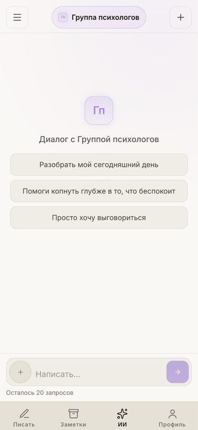
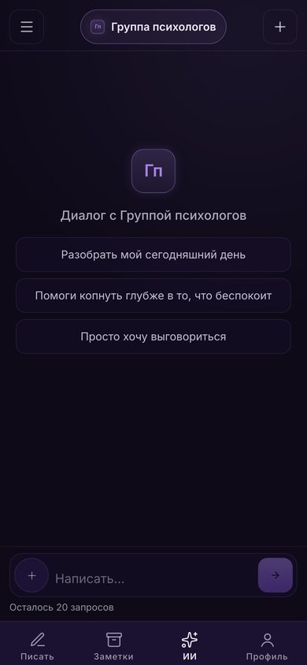

ИИ на телефоне
Вкладка ИИ — это разговоры с собеседником. ИИ включается только по вашему согласию и только когда вы сами что-то для этого делаете: написали в чат, приложили заметку или нажали разбор.
На этой странице
Согласие и первый экран
Без согласия на ИИ на вкладке — спокойная подсказка и кнопка Открыть настройки, а не техническая ошибка. Согласие даётся один раз и в том же окне отзывается; отозвать его можно и позже — на компьютере это Настройки → Безопасность.
Плохая связь при первом входе на новом устройстве согласие не сбрасывает: отказ сети приложение отзывом не считает.
Список диалогов
Сверху — список разговоров, Активные и Архив. Диалог из архива возвращается кнопкой Восстановить. Кнопка Новый диалог начинает разговор с чистого листа; название ИИ придумает сам после первого ответа.
Диалоги объединяются между устройствами: реплики, написанные на телефоне и на компьютере, не затирают друг друга, а удалённый диалог или реплика исчезают везде. Быстро переключаясь между диалогами, вы не увидите в открытом разговоре сообщений из предыдущего.


Разговор
- Собеседник выбирается в шапке диалога: группа психологов, КПТ-психолог, коуч, «Редактор» или свой. Сменить можно и посреди разговора — второе устройство эту смену не откатит.
- Прикрепить заметку — кнопка + у поля ввода. Приложение само заметки не прикрепляет: только вы решаете, какой текст уйдёт в разговор.
- Длина ответа — «Кратко», «Стандартно», «Объёмно» в меню шестерёнки; там же режим 🧠 Рассуждения с отдельным коротким списком предупреждений перед включением.
- Остановить ответ — вместо Отправить во время ответа стоит кнопка Обработка… с квадратиком; что уже пришло, останется в диалоге.
- «Иначе» под последним ответом просит ответить по-другому; прежние варианты не пропадают, между ними можно листать.
Отвечает ИИ на том языке, на котором вы спрашиваете: вопрос по-английски получает английский ответ. На «нет сил» и похожие тяжёлые фразы собеседник сначала спокойно спрашивает о безопасности и показывает телефоны помощи.
Счётчик запросов
Под полем ввода видно, сколько осталось: чат и рассуждения отдельно, например «28/30» и «5/5». Обычный чат — 30 запросов в сутки, рассуждения — 5 отдельных, разбор заметок и поиск по смыслу считаются отдельно. Счётчики обнуляются в полночь по UTC — это 03:00 по Москве.
Если ИИ не ответил вовремя (поставщик молчал, соединение оборвалось на его стороне), запрос возвращается в лимит: считается только то, что дошло.
Что видит ИИ
В разговор уходят: ваше сообщение, прикреплённые заметки, фрагменты найденных записей, запомненное в памяти ИИ и сегодняшняя дата. Портрет уходит, только если включён переключатель Портрет в диалоге.
Заметка, скрытая от ИИ (перечёркнутый глаз в списке), и заметка в корзине не попадают в разговор ни через какие сводки — ни текстом, ни через хронологию, реестр тем, сюжетные линии и дайджесты, — и на другом устройстве тоже. Разбор скрытой заметки не возвращается и при восстановлении из облака.
Подробнее — «ИИ-собеседник и разбор» и «Пароли и шифрование».